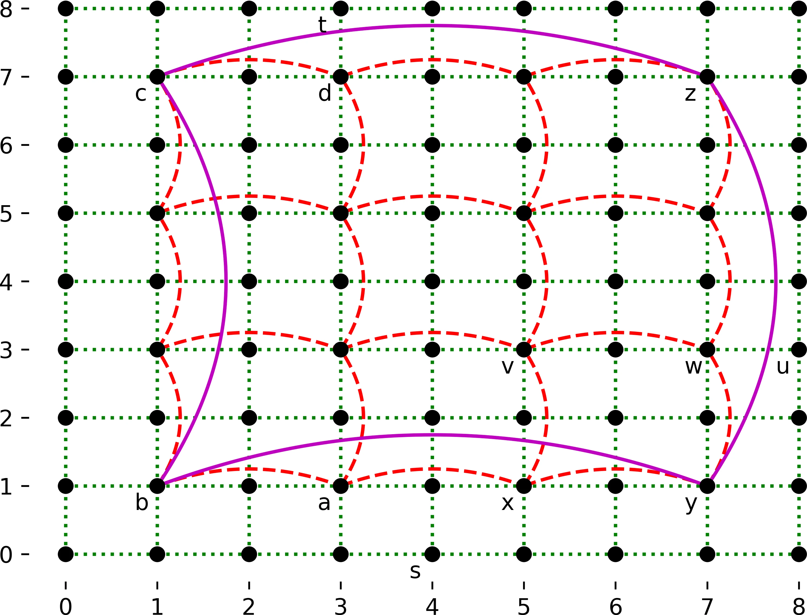

Given a graph with the edge weights representing distance, Dijkstra’s shorted path algorithm will always find the shortest path. However, this may not be the fastest path if one’s speed over each edge can vary. And it’s not going to be very quick for an extremely large graph. This assignment will examine an adaptation of Dijkstra’s that chooses a path that uses more of the faster roads (highways) over the slower roads (side roads).
This homework builds upon the material taught in lecture on slides 86-89 of the graphs slide set. You will need to be familiar with that material – both through the slide set and the video recordings – in order to proceed with this homework.

Consider the weighted graph image to the right. The green dotted lines are the side roads; there is a side road between every set of orthogonally adjacent nodes in that diagram. Main roads – red dashed lines in the figure – connect every set of nodes that are distance 2 apart. Highways, shown as solid purple lines, connect every set of nodes that are distance 6 apart. In this graph, the weight of an edge is just the distance between the nodes. HOWEVER this isn’t always true. The graph has weights provided for each edge.
Let’s assume that one was driving from (4,0), labeled s, to node (3,8), labeled t. The process would be:
The total distance using this algorithm is 13, whereas straight Dijkstra’s algorithm has a distance of 9. Presumably, if this were a real road map, the time spent on the side roads of lower speed would mean that, while it’s a shorter distance, it would take longer to get there. The path taken would be: (4,0) -> (4,1) -> (3,1) -> (1,1) -> (1,7) -> (3,7) -> (3,8). A path that went through x instead of a would also be correct.
That image is really showing three different graphs overlaid on each other, that of side roads, main roads, and highways, respectively:
The starting node may already be a node that connects a highway. In this case, the output would skip the necessary steps. However, you do not need to do anything different in your code – the first thing you do is delete the minimum node, then check it for membership in the next highest set (if you are doing side roads, you check if the removed node is in the main road set). And since the start node will be so, it will immediately terminate. For example, if the start node in the above diagram was y (at (7,1)), and the end node was d (at (3,7)), it would proceed as follows:
The path taken would be: (7,1) -> (1,7) -> (3,7), with distance 14.
Similarly, if you are traveling from x (5,1) to u (8,3), the output would skip many of the steps:
The path taken would be: (5,1) -> (7,1) -> (7,3) -> (8,3), with distance 5.
We are not looking for an optimal path. Instead, we are looking for a path that follows these five steps, as that can be computed far faster.
Note: for this homework, we are providing you with skeleton code that handles reading in of the input. HOWEVER, this will not be provided in future homeworks, so you should ensure that you understand how it works.
All input is read in from standard input (not a file).
Each run of the program will have only one graph, but will have multiple test cases.
The first line of the input will contain three integers: s, m, and h, which are the number of side road edges, main road edges, and highway edges, respectively.
The next line will contain s side road edges. Each edge is a 5-tuple: (x1, y1, x2, y2, w), where (x1, y1) is the starting coordinate of the edge, (x2, y2) is the ending coordinate, and w is the weight (cost) of traversing that edge. All edges in this assignment are bi-directional. As before, these values are all on one line, so consecutive sets of five integers form one edge.
The next line will contain m main road edges. These are formatted the same as with the side roads. All edges in this assignment are bi-directional.
The next line will contain h highway edges. These are formatted the same as with the side roads. All edges in this assignment are bi-directional.
Note that the nodes themselves can be determined from the edges.
The next line will contain an integer n, the number of test cases to run on this map.
Each test case will consist of a single line of four values, space separated: (x1, y1, x2, y2), where (x1, y1) is the starting coordinate, and (x2, y2) is the ending coordinate.
There are n test cases in each input file. The output for each test case will consist of two lines. The first line contains a single integer, which is the distance of the computed path. The second line contains a single integer, l, which is the length of the path (including both the start node and end node). The next l lines contain the coordinates of the nodes in the path, space separated (no parenthesis or commas).
There is a blank line between test case outputs.
The skeleton code provides output routines.
This file is available as example.in, and corresponds to the diagram shown above. The two test cases in this input are also the examples given above.
Note that the example input below has the data truncated to make it fit in this assignment; the full version is in example.in.
144 24 4
0 0 0 1 1 0 0 1 0 1 0 1 0 2 1 0 1 1 1 1 ...
1 1 1 3 2 1 1 3 1 2 1 3 1 5 2 1 3 3 3 2 ...
1 1 1 7 6 1 1 7 1 6 1 7 7 7 6 7 1 7 7 6
3
4 0 3 8
7 1 3 7
5 1 8 3This output is contained in the example.out file.
13
7
4 0
3 0
3 1
1 1
1 7
3 7
3 8
14
4
7 1
1 1
1 7
3 7
5
4
5 1
7 1
7 3
8 3Your code must use a min-heap (aka a priority queue).
You should first get it working without a priority queue, as that will be simpler to program and debug (and you can still get partial credit that way). Once it’s working, add in the priority queue.
Neither of the two suggested priority queues – Python’s heapq and the java.util.PriorityQueue class – have the decreaseKey() method. Instead, you can use the solution shown in the Python pseudo-code in the slides (graphs slide #79), which has three parts:
We provide skeleton code that correctly reads in the input: pa1.py (src) and PA1.java (src).
There are some assumptions that you may and may not make:
We will run your program as follows:
cat example.in | python pa1.pyThis takes the output of what is on the left (cat example.in, whose output is the contents of example.in) and uses it as the input to what is on the right. This version should work in all platforms (Windows, MacOS, and Linux).
You will submit your completed pa1.py or PA1.java to Gradescope. There will be a small set of acceptance tests that are NOT COMPREHENSIVE. It’s up to you to comprehensively test your code. The acceptance tests just verify that you are reading the input correctly and providing the expected output.